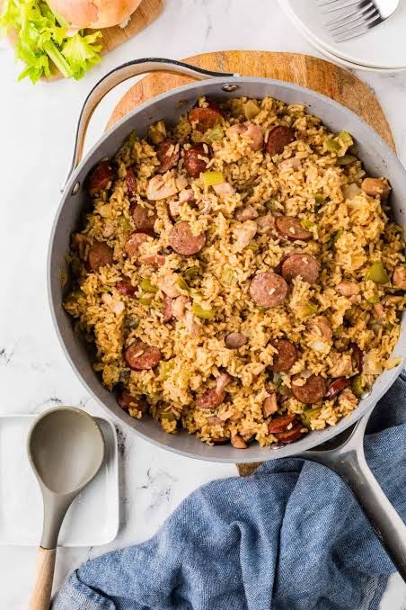

Sister Amos' Chicken Sausage Jambalaya
⬇ Download PDF
Modified from Mr. Joe Nicolosi, River Road Recipes, Baton Rouge, LA
Ingredients
- 3 large onions, finely chopped
- 10 green onions, chopped
- ½ bunch parsley, chopped
- 6 large cloves garlic, chopped
- 4 chicken breasts, cut in cubes
- 12 chicken wings or 24 wing pieces
- 3 lbs sausage (Conecuh Smoked Sausage)
- 5½ cups Mahatma Long Grain rice, uncooked
- 9½ cups chicken broth
- 2 tbsp Kitchen Bouquet Browning & Seasoning Sauce
- 3 tsp Better Than Bouillon Base or chicken bouillon cubes, crushed
- 1 lb medium shrimp plus 1 tsp seasoning (optional)
- Tony Chachere's Creole Seasoning (4–6 tsp)
- Garlic powder
- Red/cayenne pepper or black pepper to taste
- 1 tsp rosemary
- 2 tsp Italian seasoning
- Cooking oil
Equipment: 1 large skillet or pot, 1 large 15" roaster
Instructions
- Prep: Finely chop onions and place in a bowl; season the tops with Creole seasoning. Finely chop green onions in a separate bowl and season. Finely chop parsley and garlic together in a separate bowl and season.
- Season the meat: Season chicken on both sides with garlic powder, red pepper, and Creole seasoning. Cut sausage into ½" pieces.
- Brown the chicken: Brown chicken in deep hot oil for 6 minutes (3 min each side). Drain on paper towels. Do not cook longer or chicken will fall apart later. After all the chicken is browned, remove the oil and brown the sausage.
- Reserve sausage oil: After browning the sausage, remove nearly all of the sausage oil and save in a container for cooking the seasoning. Do not clean the skillet — the browned bits add flavor.
- Cook the seasoning: Sauté onions in the skillet until tender. Add green onions, parsley, and garlic. Cook until green onions are wilted. Add a little sausage oil to keep moist. Add rosemary and Italian seasoning. Mix well.
- Build the broth: Place the large roaster over 2 burners on medium heat. Add chicken broth, bouillon base, and Kitchen Bouquet sauce for a dark brown color. Add the cooked seasoning to the broth. Mix well.
- Season the broth: Bring to a rapid boil. While waiting, add 4 tsp of Creole seasoning to the water. Taste — keep adding seasoning until the water is slightly too salty (4–6 tsp total). Add black and red pepper to taste.
- Add the meat: Place chicken, sausage, and shrimp (if using) into the roaster piece by piece to keep unnecessary oils out.
- Add the rice: Once the water boils, cut the heat to very low and add the raw rice evenly throughout the roaster. Gently push the rice into the broth and off the meat using a spoon. Do not stir.
- Bake: Cover and bake in the oven at 350°F for 1 hour. Add up to 15 minutes more if the rice appears too wet in the middle. Cook until rice is done. Serves 20.